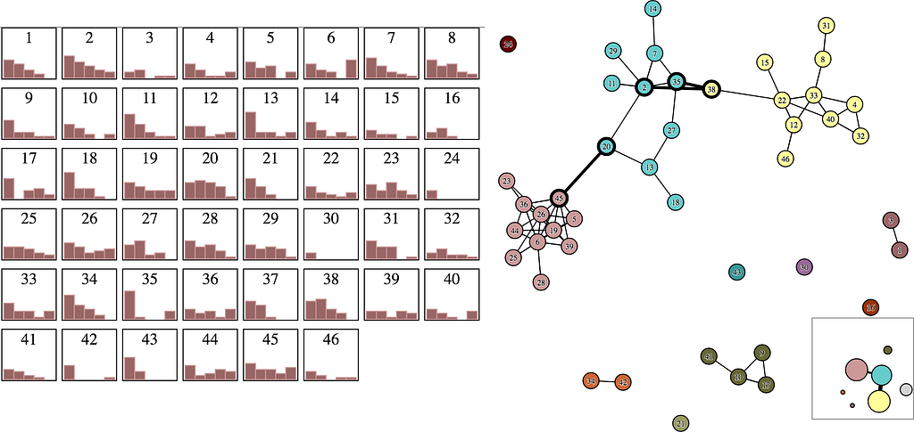
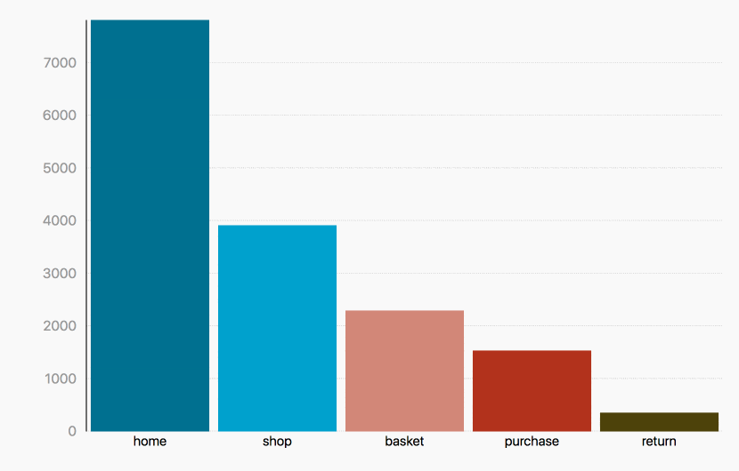
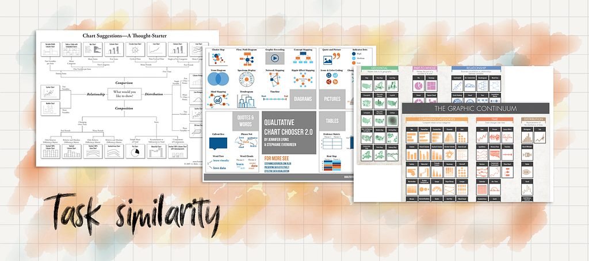
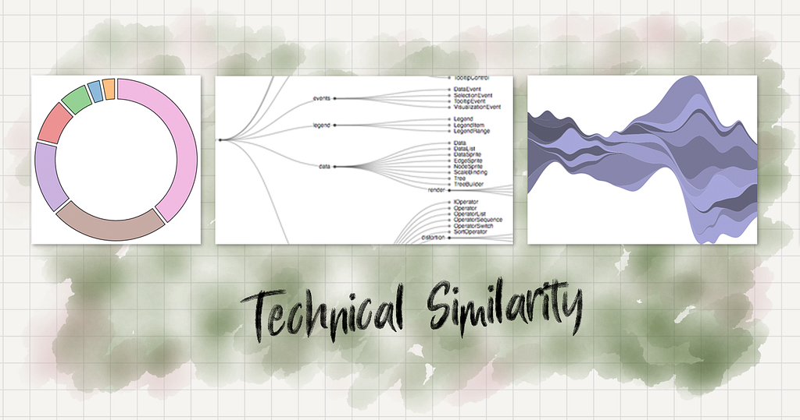
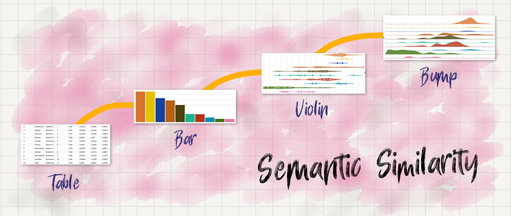
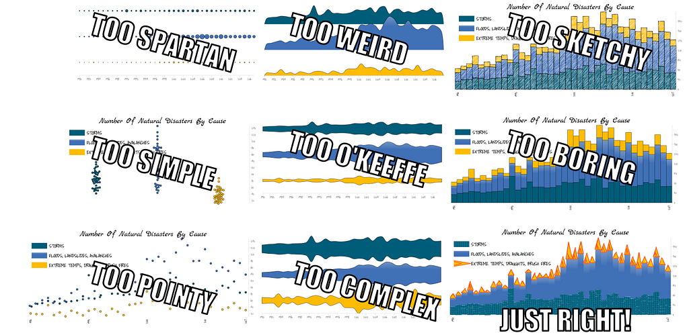
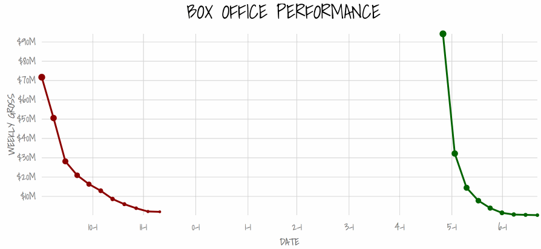

Understanding and leveraging chart similarity
This article is a collaboration between myself and Jason Forrest and if you haven’t, check out his article exploring your relationship with your audience so that they trust you enough to collaborate.
One of the most challenging tasks for a data visualization designer is convincing their stakeholders that an unfamiliar technique is more effective than a common one. Audiences are familiar with bar charts, scatterplots, and line charts, and that familiarity tends to express itself when our audience says that a simple chart is “readable” or “shows me the data” in a way an unfamiliar chart type does not. In contrast, your typical stakeholder thinks complex charts like network diagrams or hierarchical charts or graphically adventurous pieces are frivolous, indulgent and hopelessly arcane.
But there is little distinction made between a chart that is effective because it is familiar and one that is effective because it is the most optimized for the data. You could have two charts, one that is very familiar and therefore accessible but hopelessly unsuited to the data, and another that requires effort to read, so is initially “unreadable”, but if read provides the insights your stakeholders need. Because most evaluation of data visualization is done in an instinctual, ad hoc manner, it’s unlikely that your audience will make that differentiation without active guidance.

Explanatory data visualizations with exploratory data analysis

In a recent talk, I described a process I refer to as Exploratory Design, which I find to be an effective approach to designing successful data-visualization-driven applications. Exploratory Design is a process to create data visualization with the methods commonly associated with exploratory data analysis. Those methods include:
- Rapid creation of charts
- Faceting
- Iteration between related charts
Exploratory Design examines various chart types based on similarities in form, task, and semantics. The motivation for such an approach is the intuition (and experience) that an audience will find an unfamiliar chart more accessible if it is shown to be somehow related to the charts that they are already capable of reading. To be clear, exploratory design does not offer a radical new view of design, it is fundamentally iterative design in data visualization, but what it does provide is more actionable specifics to enable better design with data visualization where it’s hard to do data-specific mockups and allow for direct participation given existing tools.

Chart similarity is certainly not a new approach. Data visualization libraries show chart similarity in their documentation, and data visualization consultants have made a cottage industry out of making cards, posters and web pages relating one chart to another. There are two approaches to chart similarity (graphical & task) as evidenced by the chart taxonomies developed in popular and academic work. There’s a third (technical) seen in the tools and libraries used to create data visualization. And there’s a fourth (semantic) which I offer up as a more tractable definition of similarity for data visualization.
- Graphical similarity. A line chart with points represented as circles is made up of the same kinds of graphical elements as a node-link diagram. An adjacency matrix is made up of the same elements as a treemap and a stacked bar chart.
- Task similarity. These charts are similar in that they try to address similar problems. Different taxonomies, seen below, sometimes disagree about goals or how to categorize them, but the charts they do file into those categories often have very different forms and graphical elements.

- Technical Similarity is a third kind of similarity visible in the systems we use to visualize data and which was alluded to earlier. Regardless of whether or not a chart uses the same graphical elements or is meant to be used for the same task, it can be related to other charts in that it requires the same technical processes to prepare the data and deploy the chart. If you’re using D3, there’s a technical similarity between Pie Charts and Chord Diagrams in that under the hood they both use D3’s arc generator from d3-shape to draw certain elements. This similarity is invisible to your audience, as it should be. Bringing it up in a design process is not only unnecessary but detrimental. Still, you should be aware of it as you create charts because, as an artifact of the tools we use, technical similarity exerts a subtle pressure on how you think of relationships between constructed views into data.

- Semantic Similarity relates charts by their visual frame; the metaphor used to represent the data. I designed the charting framework Semiotic based on this definition of similarity and it’s what allowed me to make the bar chart-to-parallel coordinates GIF so easily. In this case, a violin plot is semantically similar to a bar chart because both split data into categories and measure a quantitative value across those categories. You can read more about how Semiotic was designed here but put simply there are three different “frames” in the library focused on, respectively:
- Display of XY data (line charts, scatterplots and grids)
- Display of categorical data (bar charts, violin plots, parallel coordinates)
- Display of topological — or network — data (flow diagrams, network visualization, treemaps)

Semantic similarity is preferable to graphical and task similarity because it not only uses a conceptual similarity that resonates with stakeholders but also a technical similarity (you use related technical methods to create these charts) allowing you to develop shared functionality that allows for ease of deployment. Like task similarity, your audience does not feel like you have made a significant leap from one chart to the next. It brings both views together and, in my experience, it’s easier to transition between different chart types than pure task similarity, which can have very different visual semantics. And unlike task similarity, it allows stakeholders to discover related charts that have different task optimization, enabling a discovery process in design that’s necessary for effective data visualization.
The importance of iterations and variations
Data visualization is often posed as an optimization problem. What is the optimal chart for this data and this task? From that perspective, it might seem wasteful to design in a way that focuses on creating variations and iterations. So why do this? For one thing, audiences may not be capable of reading the optimal chart for the data, in which case starting with a known but sub-optimal chart is a way to gently increase their data visualization literacy. But there’s another reason, described in this case study from by Jason Forrest:
I build a lot of BI Dashboards and many of the charts are very basic but the definitions and sources of the data can be very complex in a large enterprise. If every chart is a bar chart, then it creates a numbing effect where the data loses its meaning. Whenever I see an opportunity to move beyond the most standard visualizations, I first present a sketch or prototype of the expected chart type but then present an alternate version to show how the data could be viewed differently. Since I have invested in building trust with my colleagues they trust in my ability to communicate the new chart type to the audience or feel open to debate the pros and cons. This could take a few iterations, but in the end, our work is improved by the dialogue and the product is more memorable for our colleagues.
There’s some resistance to this approach to data visualization, which is seen as a corruption of the pure display of data by acknowledging that novelty and beauty are needed in order to draw an audience in. I disagree and instead think of this as accepting that charts, like any other communication, need to be compelling to be convincing, and if your bar chart, as optimal as it may be, has been reduced to background noise by the constant hum of bar charts crossing a stakeholder’s screen, then it’s your responsibility to make it more compelling, even if it’s not any more precise or accurate than a more simple form.
Faceting is just another form of iteration where the results are kept on-screen as multiple charts looking at the same data. While the traditional “small multiples” uses the same chart type to show different slices of the data, iterating through dimensions and metrics is really no different than iterating through different chart forms. It may be that a bar chart, a violin plot and a beeswarm plot are all suitable and show enough different information about a dataset that all are appropriate, even if they show the same dimensions and metrics, in which case your faceting is on chart method rather than metric and dimension. But whether you adhere to a more traditional take on faceting or not, the basic concept of keeping material in the final product that is traditionally used for exploratory analysis still holds.
Enhancing Data Visualization Literacy
Exploratory design emphasizes the importance of data visualization literacy for an audience. It assumes that when you are designing visualizations for your audience that they will be unfamiliar with many of its more advanced possibilities. There’s a natural tension in this relationship wherein the audience wants a particular kind of graphic that is familiar and presents the data in the format they expect while the data visualization creator wants to bring to bear techniques that they’ve seen have a positive effect in similar situations in the past. By anchoring the introduction of a more challenging form in its similarities to a more common one, it helps develop data visualization literacy and builds trust with your stakeholders.

There’s an ongoing debate about whether data visualization is a skill or a profession. As long as there are professional roles for creating data visualization for others, that role has to concern itself not only with building great charts but also with improving the literacy of its audiences. You will not only need to communicate data but also communicate the importance of more sophisticated data visualization. This is done through collaboration in the design process as well as contextualized charts with clear labeling and annotation to help increase accessibility.
Trust is a currency. You earn it by producing work that your stakeholders expect, with context and quality that they do not. You compound it by presenting them with more effective but still accessible methods of revealing the insights they are interested in. But to really provide impact and not just fulfill requirements, you need to be willing to spend that trust to push your audience out of their comfort zone.
At Netflix, we introduced a connected scatterplot on one of our big dashboards. It’s not a common chart, but through semantic similarity I could show that is was fundamentally similar to a time series. It’s even easier to show the similarity with simple animation, which is trivial to provide when under the hood they use all the same technical methods:

It was referred to by our stakeholders as “the squiggle” but because it wasn’t totally alien to them and because we had already built out other effective views in this dashboard, they let us integrate this novel chart form. Like any complex chart, it was a bet and it meant we were challenging our stakeholders to increase their data visualization literacy. They wouldn’t have been willing to do that if we hadn’t established trust, a topic covered in more detail in Jason Forrest’s piece [link].
The chart turned out to be a good choice and led to even more trust that we could then translate into other more sophisticated choices. That virtuous cycle of building and spending trust is how you build data visualization literacy at an organization. It can’t be done via dictate or by lecturing your stakeholders on the latest data visualization research or by impressing them with cool charts you saw on Twitter. It can only be done by building and spending trust.
Part of that trust comes from understanding and empathizing with stakeholders who are more familiar with basic charts. Part of it comes from empowering them to use more sophisticated charts that are worth the time to learn them. Through exploratory design you create a natural place at the table for your stakeholders in the design process and position yourself as not only a chart creator but also a proponent of data visualization literacy. By doing so you not only improve your organization’s effectiveness, you empower yourself to create more sophisticated data visualization and increase the data visualization literacy of your collaborators.
—
This article is a collaborative effort with Jason Forrest. His article will explore the relationship aspect of data teams with their audience. You can find his article here.
Exploratory Design in Data Visualization was originally published in Towards Data Science on Medium, where people are continuing the conversation by highlighting and responding to this story.